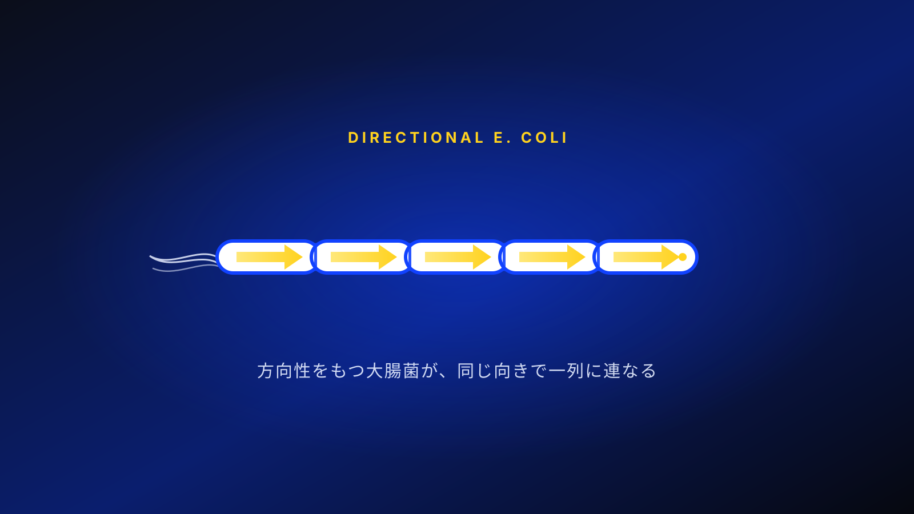

Project
The header nav is a chain of directional E. coli taken from ecoli-line.svg. Each cell is one page, and the cell for the current page glows yellow. The tail has flagella and the head carries a direction marker.

Wet Lab
Experimental records.
Dry Lab
Modeling and software.
Human Practices
Dialogue with society.
Team
Meet the members.